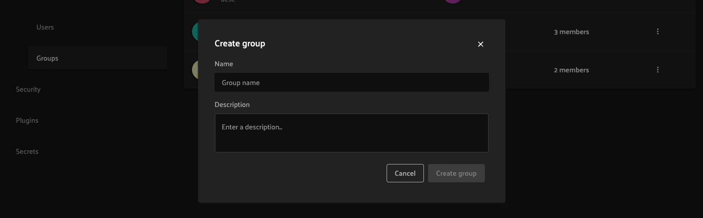
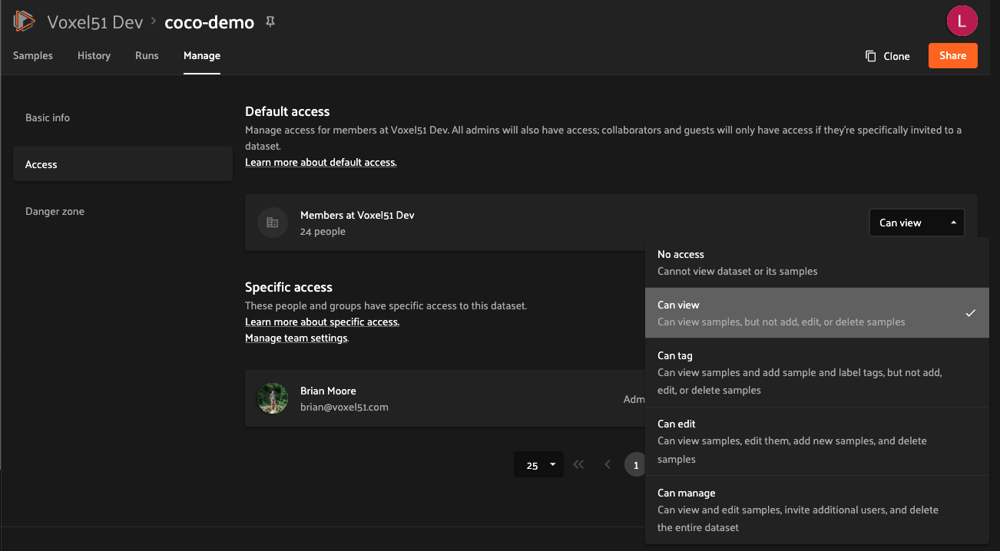
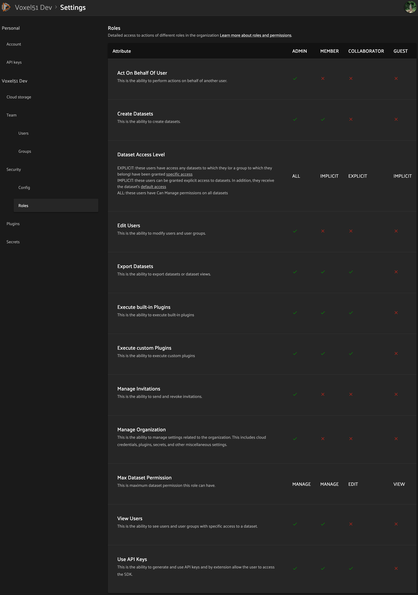

Roles and permissions¶
FiftyOne Teams is built for collaboration, with the goal of making it as easy as possible for engineers, data scientists, and stakeholders to work together to build high quality datasets and computer vision models.
Accordingly, FiftyOne Teams gives you the flexibility to configure user roles, user groups and fine-grained permissions so that you can safely and securely collaborate both inside and outside your organization at all stages of your workflows.
This page introduces the basic roles and permissions available in FiftyOne Teams.
Roles¶
FiftyOne Teams has four user roles: Admin, Member, Collaborator, and Guest.
Admins can access user management features by clicking on their account icon in the upper-right of the FiftyOne Teams App and navigating to the “Settings > Team > Users” page:

Admins can invite new users by clicking on “Invite people”, as shown below. Invited users will receive an email invitation with a link to accept the invitation.
Note
Invited users may login using any identity provider that has been enabled on your deployment. If you need more information about configuring IdPs or increasing your user quotas, contact your Voxel51 CS engineer.
Admin¶
Admins have full access to all of an organization’s datasets and can create, edit, and delete any dataset.
Admins can also invite or remove users from the organization and change any other user’s roles, including promoting/demoting users to admins.
Member¶
Members can create new datasets and can be granted any desired level of permission on existing datasets. Members may also have a default access level to datasets that use this feature.
Members do not have the ability to see or manage an organization’s users.
Collaborator¶
Collaborators only have access to datasets to which they have been specifically granted access (a dataset’s default access level does not apply to Collaborators), and they may only be granted Can view, Can tag or Can edit access to datasets.
Collaborators cannot create new datasets, clone existing datasets, or view other users of the deployment. Collaborators may export datasets to which they’ve been granted access.
Guest¶
Guests only have access to datasets to which they have been specifically granted access (a dataset’s default access level does not apply to Guests), and they may only be granted Can view access to datasets.
Guests cannot create new datasets, clone existing datasets, export datasets, or view other users of the deployment.
Groups¶
User groups in FiftyOne Teams allow organization admins to manage a collection of users as a single entity. This simplifies the process of assigning permissions to multiple users, making it more efficient to control access to datasets.
Admins can manage groups through the “Settings > Team > Groups” page. Each group can be given specific dataset access permissions, which apply to all users within the group. Collaborators’ and guests’ access to the dataset is limited by the maximum dataset access level of the role.

Admins can create a new group by clicking on “Create group” and then adding existing users to the group by clicking on “Add users”.

Note
Non-existing users cannot be directly added to a group. Users must be invited and accept the invitation before they can be added to a group.
Permissions¶
Admins and users with the Can manage permission on a dataset can configure a dataset’s permissions under the dataset’s Manage tab in the FiftyOne Teams App.
In FiftyOne Teams, dataset permissions for a user are determined by both the access they receive from their groups’ permissions and individual permissions assigned to them.
A user’s permissions on a dataset is the maximum of their permissions from the following sources:
Admins implicitly have full access to all datasets
Members have the dataset’s default access level
Users may be granted specific access to the dataset
Users may be members of one or more groups, each of which may have specific access to the dataset
Note
User role determines the highest level of access that a user can be granted to a dataset. For example, a user with Guest role can be added to a group with Can edit permission to a dataset, but this user will have Can view permission instead of Can edit permission of the dataset, because Guest role only allows Can view permission to datasets.
Default access¶
All datasets have a default access level, which defines a minimum permission level that all Members have on the dataset.
A dataset’s default access level can be set to No access, Can view, Can tag, Can edit, or Can manage as shown below:
Note
Default access level only applies to Members. Guests and Collaborators must be granted specific access to datasets.
Specific access¶
Authorized users can grant specific access to a dataset using the “People and groups with access” section shown below.
To give access to an existing user or group, simply click “Share” button on the top right. A list of users with access to the dataset is shown. Click “Add User” or “Add Group” to grant access to a new user or group.


The following permissions are available to each user role:
Groups may be granted Can view, Can tag, Can edit, or Can manage permissions
Members may be granted Can view, Can tag, Can edit, or Can manage permissions
Collaborators may be granted Can view, Can tag, or Can edit permissions
Guests may be granted Can view permissions
Note
Authorized users can use the “Grant access” workflow to give Can view , Can tag, or Can edit access to a dataset to an email address that is not yet user of a FiftyOne Teams deployment.
When the invitation is accepted, the user will become a Guest if the Can view permission is chosen or a Collaborator if a higher permission is chosen, and an Admin can upgrade this user to another role if desired via the Team Settings page.
No access¶
If a user has no access to a dataset, the dataset will not appear in the user’s search results or show on their dataset listing page. Any direct links to this dataset that the user attempts to open will show a 404 page.
Can view¶
A user with Can view permissions on a dataset can find the dataset from their dataset listing page.
Users with Can view permissions cannot modify the dataset in any way, for example by adding or removing samples, tags, annotation runs, brain runs, etc.
Note
Members (but not Guests or Collaborators) with Can view access to a dataset may clone the dataset.
Can tag¶
A user with Can tag permissions on a dataset can find the dataset from their dataset listing page.
Users with Can tag permissions can modify sample/label tags but cannot modify the dataset in any other way.
Can edit¶
A user with Can edit permissions on a dataset has all permissions from Can view and, in addition, can modify the dataset, including:
Adding, editing, and deleting samples
Adding, editing, and deleting tags
Adding and deleting annotation runs, brain runs, etc.
Note
Deleting a dataset requires the Can manage permission.
Can manage¶
A user with Can manage permissions on a dataset has all permissions from Can view, Can tag and Can edit and, in addition, can delete the dataset and configure the permissions on the dataset of other users.
Remember that all admins can implicitly access and manage all datasets created on your team’s deployment.
Note
Any member who creates a dataset (including cloning an existing dataset or view) will be granted Can manage permissions on the new dataset.
Roles page¶
Admins can review the actions and permissions available to each user role by navigating to the “Settings > Security > Roles” page:
